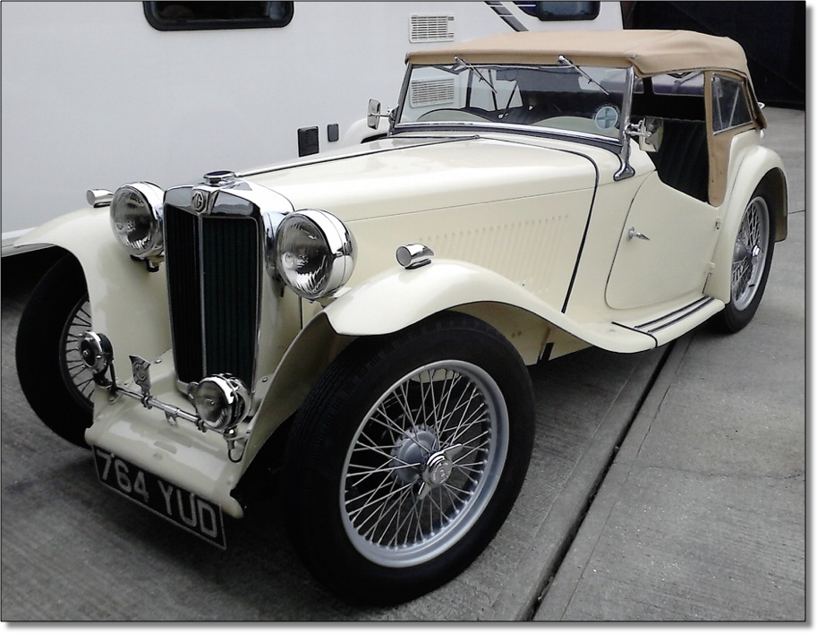
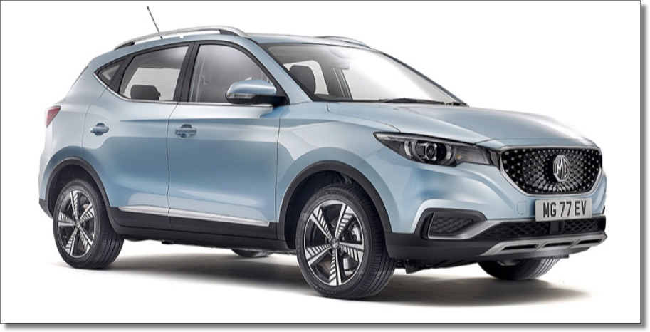

When I was in my early teens my father got into cine photography. His second camera had a zoom lens and he had a set of four, very bright and very hot lights that he would use when taking films indoors. When the 8mm cine film came back from the processor he would thread it on to the projector and we would watch a series of views of the surrounding countryside and of my mother, brother and I walking towards the camera, with some suitable backdrop. As on previous film showings we would be mesmerised by the constant zooming in and out and the fast panning from left to right and back again. He knew he should use the zoom facility sparingly and pan slowly, as one might view the panorama, but he couldn’t resist it. After all, he had the technology and he couldn’t not use it.
It’s a similar situation when people first start using PowerPoint or similar presentation tools. These packages provide facilities to animate your presentation and the temptation is to use them all. So a person new to the presentation game is likely to ‘fly’ text in from every direction, with diagrams appearing in a flash or expanding and spinning from a point. Their aim seems to be to use every available animation feature and every font and colour in the pallet.
Of course it’s not just presentation applications that provide an excess of technology. I was a passenger in a friend’s Nissan Leaf the other week. As we travelled up the A23 I became a little concerned that my driver was wandering across the lane markings. After a while he explained that as he did so the steering wheel should vibrate to warn him that he was straying out of his lane, but he couldn’t find how to turn the facility on! He did, however, manage to turn on the cruise control, mainly so as to demonstrate that, as we caught the car in front, the car we were in automatically slowed so as to keep a safe distance. And his feet were completely off the pedals. Then, when he steered into the next lane, the car accelerated back to its set speed. The only problem was that the car didn’t know about a sharp left-hand bend that was just ahead! Another moment of concern.
Of course, the technology used in our vehicles has been enhanced or added over the past century. For example:
Then, current-day vehicles, like my friend’s electric car, have seen a recent spurt in new technology. Reversing sensors have been in use for many years, but now rear view cameras are common place, as are automatic lights and windscreen wipers. Most of the recent technology activity seems to be in the form of what is called driver-assist facilities. These include:
Some of these features clearly improve the safety of cars and help protect the occupants, but some people may think that other features are implemented just because they can be. Do we really need the added complexity required to automatically turn on the wipers when drops of water fall on the windscreen?
 At this point you may be wondering how this all relates to MGs. Perhaps the link is tenuous, but we can compare at one end of the vehicle technology spectrum a T-Series, with its steel chassis, ash-framed body tub, front beam axle with leaf springs, steering box and drum brakes, with the latest offering from the MG marque, the MG ZS EV. As well as being a battery electric vehicle (BEV) and described as a ‘small family SUV’ (I’m not sure if that’s the family or the car that is small), the ZS EV is packed with modern technology. According to the literature, as well as the usual features such as ABS and power steering, it includes:
all under the marketing name of ‘MG Pilot’. Perhaps we don’t drive cars any more, but fly them!
So it looks as though, even in our favourite marque, the range of technology goes from that of the 1930s to the state where the driver and the technology seem to merge. I wonder which of us will be the first to get into our MG, ask it to take us home and sit back to read the paper! Driving both a T-Series and a modern car I notice that the latter is simply for getting from A to B, with little thought about how it is achieved or whether or not we will get to our destination. However, the TC is all about the driving, with the constant thought of all the mechanical and electrical components that could fail and strand us by the roadside. But then I could always use my smart phone to call for assistance.
(Written 19th December 2019; published in WSMGOC Main Gear, February 2020.)
© David James 2020 Last updated: 2nd May 2020